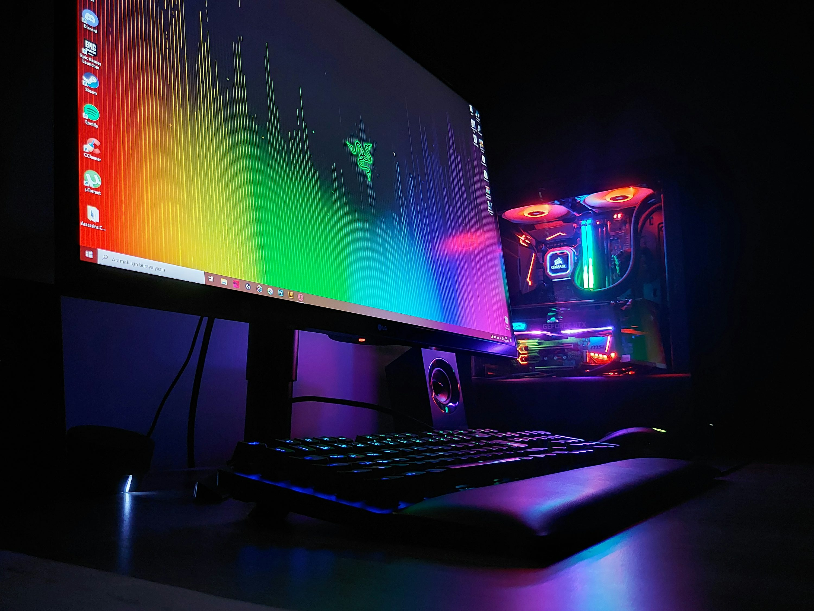
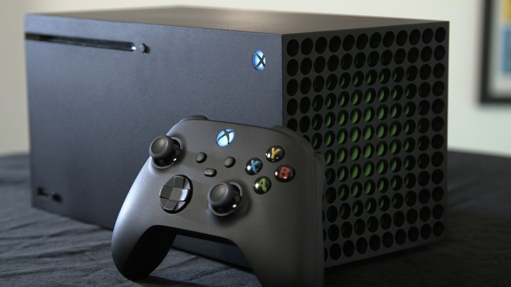
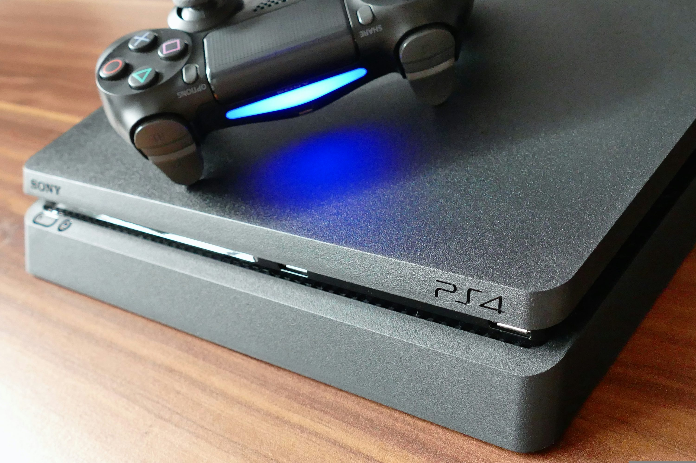
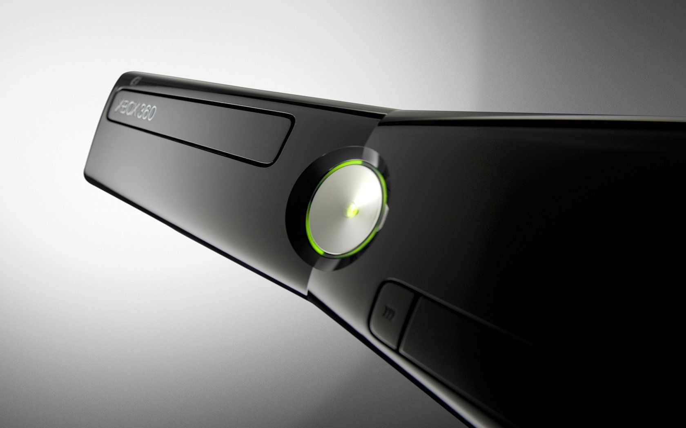
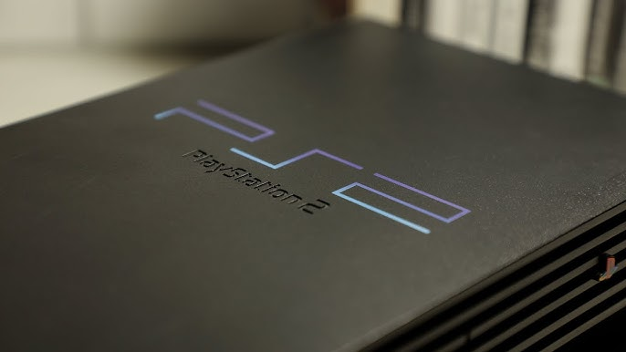
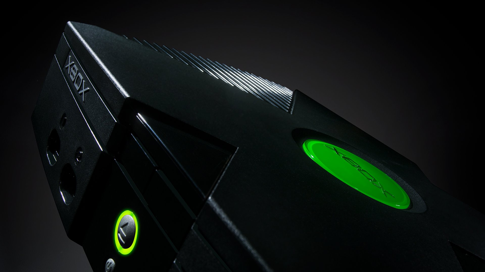
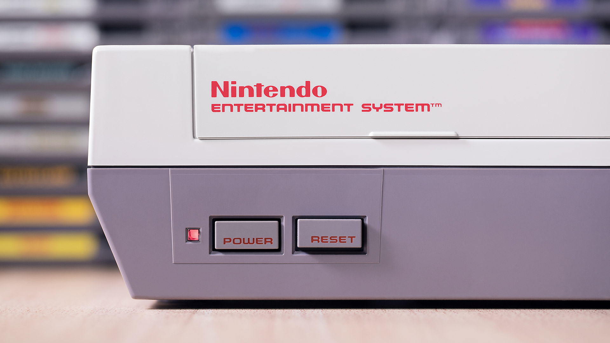

pc
The history of personal computers dates back to the mid-20th century, beginning with the development of early computing machines like the Eniac in the 1940s, which were large, expensive, and used primarily by governments and research institutions. The concept of a personal computer took shape in the 1970s with the advent of microprocessors, such as the Intel 4004, enabling smaller more affordable machines. In 1975, the Altair 8800 became one of the first commercially successful personal computers, followed by the introduction of the Apple ii in 1977, which was pivotal in bringing pc's into homes and small businesses. ibm entered the market in 1981 with its iconic ibm pc, setting a standard for personal computing. The rise of graphical user interfaces (gui) in the 1980s and the rapid advancements in processing power, storage, and software led to widespread adoption of pcs throughout the 1990s and into the 2000s, transforming the way people work, communicate, and access information.
Xbox series x
The Xbox series x, released in November 2020, is Microsoft's fourth-generation gaming console and part of the Xbox family. It represents a significant leap in hardware and performance, featuring powerful components like an amd zen 2 processor, a custom rdna 2 gpu, and a fast nvme ssd, all designed to deliver high-resolution gaming at up to 4k with 120 frames per second and support for ray tracing. Its development is part of Microsoft’s ongoing effort to remain competitive in the gaming market, following the success of the original Xbox (2001), Xbox 360 (2005), and Xbox one (2013). The Xbox series x competes directly with Sony’s playstation 5, focusing on raw performance, backward compatibility, and integration with Microsoft's broader ecosystem, including Xbox Game Pass and cloud gaming services. The Xbox series x continues the company’s push toward a future of digital gaming and cross-platform accessibility.
Playstation 4
The Playstation 4 (ps4), developed by Sony Computer Entertainment, was released on November 15, 2013, as the successor to the Playstation 3. It was designed to offer a more powerful gaming experience, featuring improved graphics, a new controller with advanced features like the touchpad, and a focus on social gaming. The ps4 competed directly with Microsoft's Xbox One and Nintendo's Wii U, becoming a dominant force in the eighth generation of video game consoles. Its success was driven by strong exclusive games like The Last of Us Part ii, Spider-Man, and God of War, as well as its emphasis on digital gaming, media integration, and online services. Over its lifespan, the ps4 sold over 117 million units , making it one of the best-selling consoles of all time.
Xbox 360
The Xbox 360, developed by Microsoft, was released on November 22, 2005, as the successor to the original Xbox. It marked a significant step forward in gaming technology with its powerful hardware, online services through Xbox Live, and high-definition graphics. Competing with Sony's PlayStation 3 and the Nintendo Wii, the Xbox 360 became known for its extensive library of popular games, such as Halo 3, Gears of War, and The Elder Scrolls V: Skyrim. The console also introduced the Kinect, a motion-sensing peripheral, which expanded gaming into the realm of physical interaction. Despite facing early hardware issues, the Xbox 360 became a commercial success, selling over 84 million units worldwide by the time it was succeeded by the Xbox One in 2013. Its legacy lies in shaping the modern gaming landscape, particularly through its focus on online multiplayer gaming and digital content delivery.
Playstation 2
The PlayStation 2 (PS2), released by Sony on March 4, 2000, is one of the most successful video game consoles in history, with over 155 million units sold worldwide. It was the successor to the original PlayStation and featured significant improvements in hardware, including better graphics, a built-in DVD player, and the ability to play audio CDs, which helped it become a versatile entertainment device. The PS2 boasted an impressive library of games, including iconic titles such as Grand Theft Auto: San Andreas, Final Fantasy X, and Metal Gear Solid 2: Sons of Liberty, which solidified its dominance in the sixth generation of consoles. Its backward compatibility with PlayStation games also attracted a large base of loyal fans. The PS2's long lifespan, lasting until 2013, allowed it to outlast its competitors and cement its place as a groundbreaking console in the history of gaming.
the Original Xbox
The original Xbox, developed by Microsoft, was released on November 15, 2001, marking the company's first foray into the video game console market. It was a bold move by Microsoft, competing directly with Sony's PlayStation 2 and Nintendo's GameCube. The Xbox featured cutting-edge technology for its time, including a built-in hard drive, Ethernet port for online gaming via Xbox Live, and powerful graphics capabilities powered by nvidia. The console's most notable launch title was Halo: Combat Evolved, which became a defining franchise for the Xbox brand and helped establish the platform's reputation for first-person shooters. Although the Xbox did not outsell its competitors, it laid the groundwork for Microsoft's future success in the gaming industry, leading to the development of the Xbox 360 and the eventual establishment of Xbox as a major gaming brand. The original Xbox sold around 24 million units worldwide before being succeeded by the Xbox 360 in 2005.
the n.e.s
The Nintendo Entertainment System (nes), released in Japan in 1983 as the Famicom and later in North America in 1985, was a pivotal console that helped revitalize the video game industry after the crash of 1983. Developed by Nintendo, the nes introduced a range of innovative features, including a redesigned controller with a D-pad, and its iconic library of games, such as Super Mario Bros., The Legend of Zelda, and Metroid, which became foundational franchises for the company. The nes also marked the beginning of third-party developer support, which allowed developers like Konami and Capcom to create hits like Mega Man and Castlevania. By selling over 60 million units worldwide, the nes became a cultural phenomenon, establishing Nintendo as a leader in the gaming industry and setting the stage for the future of home consoles.
the Brown Box

The Brown Box, developed by Ralph H. Baer in 1967, is considered the first home video game console, laying the foundation for the modern gaming industry. Initially created as a prototype for a system that could play simple games on a television set, it was later developed into the Magnavox Odyssey, which was released in 1972. The Brown Box's games were very basic, featuring simple graphics and gameplay, such as the iconic Tennis, a precursor to Pong. Though its technological capabilities were limited by today's standards, it marked the beginning of home gaming systems. The success of the Odyssey, and the influence of the Brown Box, helped spark the video game console revolution, leading to the development of more advanced systems and shaping the future of gaming.